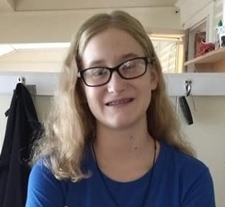
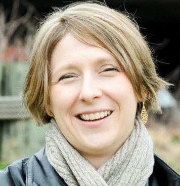
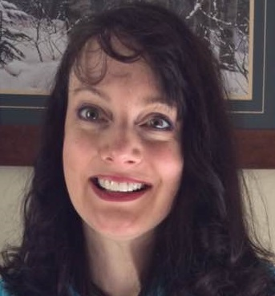
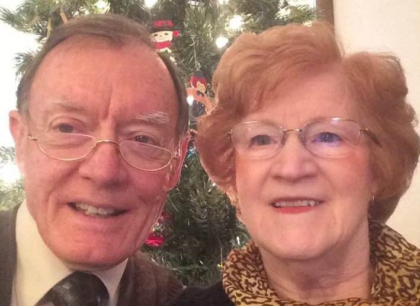
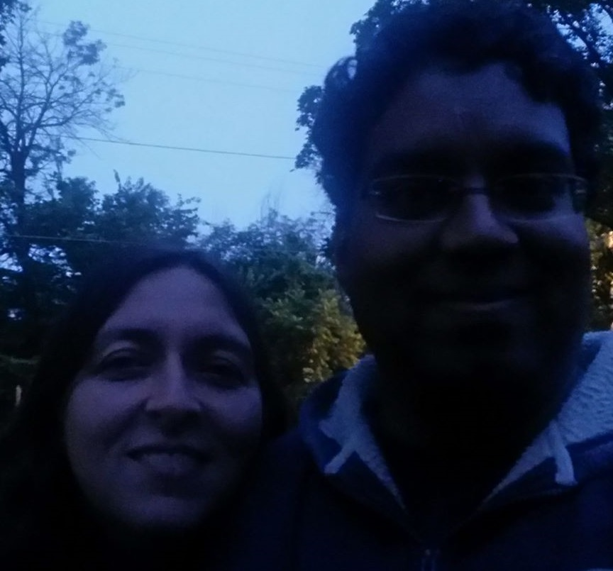

Willem Van Haaften
Willem is Joel's son, who is currently a Sophmore at UW-Eau Claire. He is pursuing a degree in Computer Science with a minor in Mathematics. Willem enjoys playing video games in his free time and often shares his games with his dad, who also enjoys playing them.
Alice Van Haaften
Alice is Joel's daughter, who is currently a Junior in High School. She is currently undecided on her future plans, but intends on exploring the field of writing. Alice enjoys making art, including painting, jewelry, and drawing, as well as playing Dungeons and Dragons with her friends.
Jennifer Van Haaften
Jennifer, Joel's spouse, is the assistant director of the Veteran's Museum in Madison. She met Joel in college, where they shared a love for history. Jennifer also enjoys writing, and has written several different books with her friend, Moy, in an attempt to pubish them.
Nora Kirkwold
Nora is Joel's sister, who currently resides near the Twin Cities in Minnesota. There, she works as an architect and has headed several large scale projects for designing residential buildings. Nora is also an avid artist and during the winter season puts her skills to use by creating snow sculptures which compete in her local competition.
Glenda and Ervin Van Haaften
Glenda and Ervin are Joel's parents who currently reside in a small town in Iowa, where Joel and Nora grew up. Before retirement, they both worked as educators and also taught Sunday school lessons at their local church. Now, Joel's mom, Glenda, spends time working in her garden, while Joel's dad, Ervin, spends time working on building or maintaining projects in carpentry or metal working.
Moy and Yamin Ahmad
Moy and Yamin are close friends to Joel and Jennifer. They met soon after Joel and Jennifer moved to the house they currently reside in when Joel took Willem and Alice to a play group at the library when they were near the ages 5 and 3 respectively. Moy works as a veterinarian and Yamin works as an Economics professor and both help raise 3 kids. Joel and Jennifer often meet with Moy and Yamin to play board games while their kids would interact.